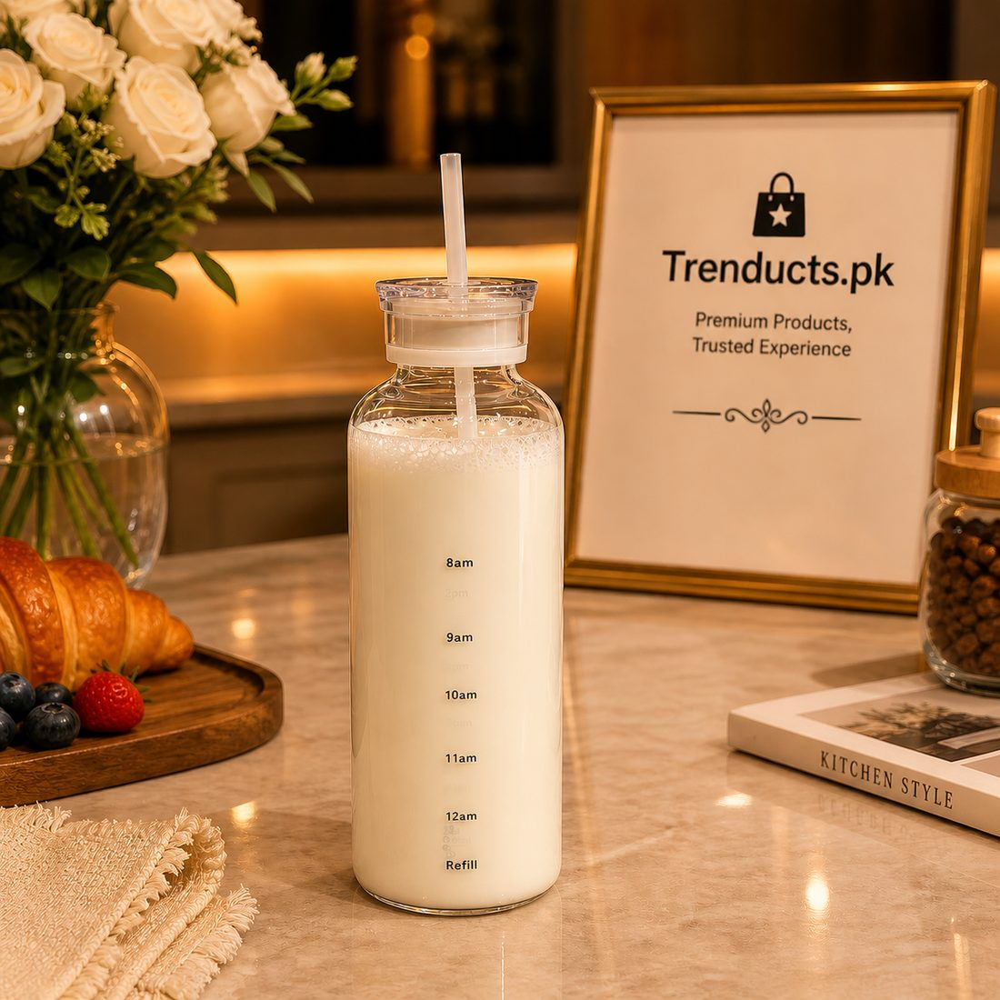
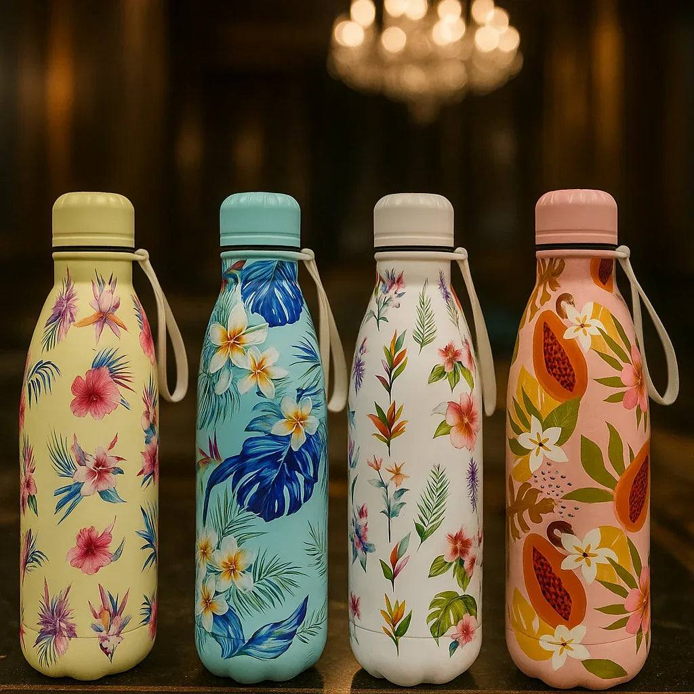
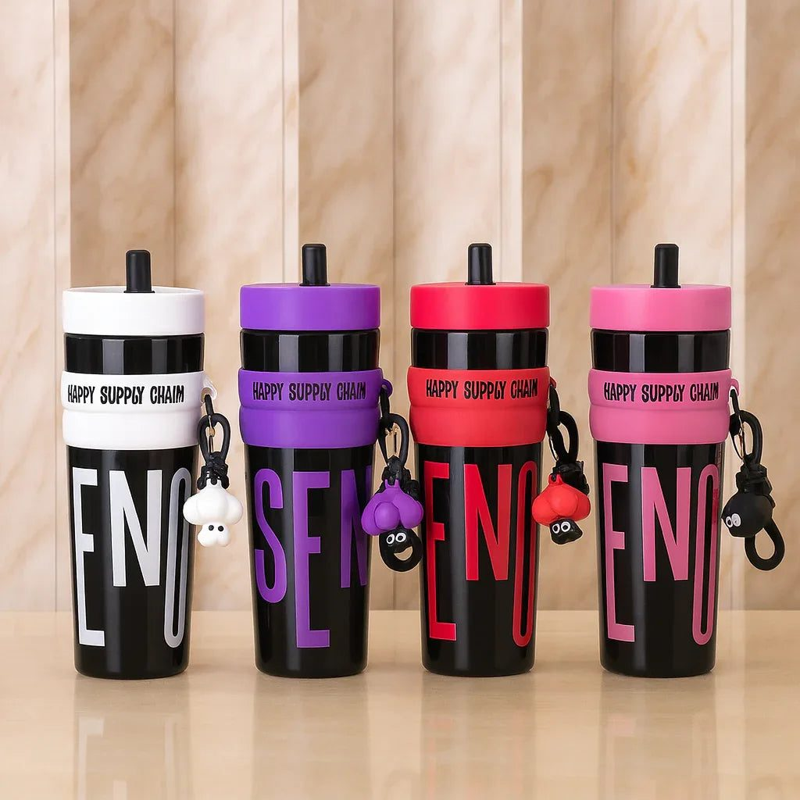

Gyms across Pakistan have filled up in recent years, from neighbourhood fitness centres in Lahore to boutique studios in Karachi and Islamabad. Plenty of people now also run in parks, walk on Race Course tracks or play futsal several evenings a week. What many of them overlook is something simple: drinking enough water around exercise, in a climate where summer heat and humidity can be punishing.
This guide is not medical advice, and anyone with a health condition should talk to their doctor. It is a practical look at building good drinking habits and picking a bottle that actually gets used.
Why hydration matters more here
Exercising in hot weather makes you sweat more, and sweat loss can be heavy in a non-air-conditioned gym or an outdoor session in June. Thirst often lags behind what your body needs, so many people only drink once they already feel drained. Building drinking into your routine, rather than waiting for thirst, is the habit to aim for.

Before, during and after
- Before: drink a glass of water in the hour before training, rather than gulping a lot just before you start.
- During: take small sips between sets or every so often during a run or match.
- After: keep drinking steadily as you cool down, and continue through the evening.
If you train hard for a long time in serious heat, plain water may not be enough on its own; ask a doctor or a qualified coach about electrolytes rather than guessing.
Choosing the right bottle
The best bottle is the one you carry every day. Think about where you train and how.
Insulated stainless steel bottles keep water cold for hours, which is a real advantage in summer when gym water coolers are warm or not available. They are tough enough to be dropped on a gym floor and live in a bag.
Glass bottles with time markings are great for daily intake at home or the office. The markings show how far through the day you should be, which helps people who forget to drink. Glass keeps water tasting clean, though it needs more care in a gym bag; a protective sleeve helps.
Leakproof lids are essential for any bottle that shares a bag with a phone, clothes and a towel. Test the lid at home before trusting it.
Size and carrying
A larger bottle means fewer refills, but it is heavier. Many people do well with a medium bottle for training plus a larger one at home or work. A carry loop or handle makes it easy to hold while walking from the car or clipping onto a bag.

Keeping bottles clean
Water bottles develop smells when left closed with leftover water. Rinse and leave the bottle open to dry every evening. Once or twice a week, wash with warm soapy water and a bottle brush, paying attention to the lid and any straw. If you add lemon or protein drinks, wash on the same day.
Habits that make it stick
- Fill your bottle the night before and leave it next to your gym shoes.
- Refill before you leave the gym rather than when you get home.
- Keep a second bottle at your desk so you drink between workouts.
- Pair drinking with habits you already have, like a glass with each meal.
In Ramzan
During Ramzan, many people shift workouts to after iftar or just before sehri. Focus on drinking water steadily between iftar and sehri rather than all at once, and keep sessions lighter on long, hot days.

Finding a bottle
If you are choosing a bottle for training, the water bottles and sippers at www.trenducts.pk include insulated steel flasks, leakproof bottles and time-marked glass bottles, delivered across Pakistan.
Small sips, steady progress
Fitness gains come from many small habits repeated over weeks. Drinking water steadily is one of the easiest to build, and the right bottle makes it nearly automatic.